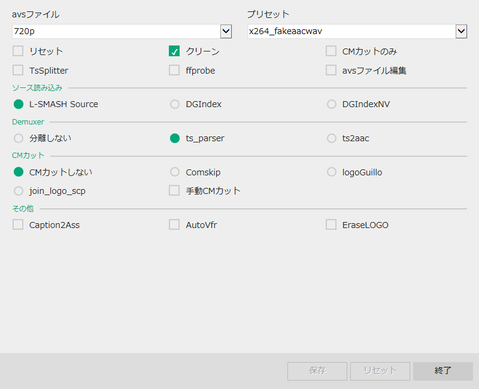
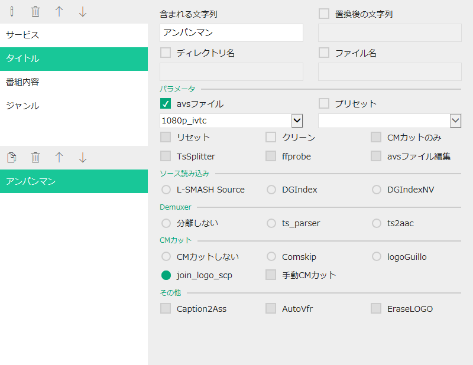

設定
設定にはAutoConvertSettingsを使用します。Settings.batで起動できます。
AutoConvert
パス
各アプリケーションへのパスを指定します。AutoConvertフォルダは${path}マクロに置換されます。
引数
各アプリケーションに使用する引数を指定します。
その他
AutoConvertに関するその他の設定です。
"ポーズ"は失敗した際にリトライできるように中断できます。
"ウィンドウモード"は各アプリケーションを起動する際のウィンドウ状態を指定します。
AutoConvertUtility
全般
AutoConvertUtilityに関する全般の設定です。
ディレクトリ名とファイル名にはマクロが使用できます。マクロは二重括弧 (( )) で囲むと、括弧内のマクロが空白だった場合、括弧ごと削除されます。
- ${original} - 入力ファイル名
- ${service} - サービス名
- ${title} - タイトル
- ${title2} - タイトル(しょぼいカレンダーから取得)
- ${subtitle} - サブタイトル
- ${genre} - 親ジャンル
- ${genre2} - 子ジャンル
- ${part} - パート
- ${number} - 話数
- ${number2} - 話数(2桁)
- ${number3} - 話数(3桁)
- ${number4} - 話数(4桁)
- ${YY} - 開始年(2桁)
- ${YYYY} - 開始年
- ${M} - 開始月
- ${MM} - 開始月(2桁)
- ${D} - 開始日
- ${DD} - 開始日(2桁)
- ${W} - 開始曜日
- ${h} - 開始時
- ${hh} - 開始時(2桁)
- ${m} - 開始分
- ${mm} - 開始分(2桁)
- ${s} - 開始秒
- ${ss} - 開始秒(2桁)
- ${_YY} - 終了年(2桁)
- ${_YYYY} - 終了年
- ${_M} - 終了月
- ${_MM} - 終了月(2桁)
- ${_D} - 終了日
- ${_DD} - 終了日(2桁)
- ${_W} - 終了曜日
- ${_h} - 終了時
- ${_hh} - 終了時(2桁)
- ${_m} - 終了分
- ${_mm} - 終了分(2桁)
- ${_s} - 終了秒
- ${_ss} - 終了秒(2桁)
パラメータ
AutoConvertUtilityのパラメータの初期値です。
"avsファイル"と"プリセット"は、使用するavsファイルとプリセットを選択します。それぞれavsフォルダとpresetフォルダに入っているものが選択できます。
"リセット"は、前回の処理データを使用せずに処理します。
"クリーン"は、正常に終了した場合に処理データを削除します。
"CMカットのみ"は、CMカットの処理データを保存するだけで、エンコードはしません。
"TsSplitter"は、TsSplitterを使用したあとにエンコードを行います。
"ffprobe"は、ffprobeを使用して正確に映像と音声を指定できます。
"avsファイル編集"は、エンコード前にavsファイルを編集できます。
"ソースの読み込み"は、TSの読み込みに使用するデコーダーを選択します。
"Demuxer"は、音声ファイルの分離に使用するDemuxerを選択します。L-SMASH Sourceで直接読み込みたい場合や、DGIndexで分離された音声ファイルを使用したい場合などは、"分離しない"を選択することも出来ます
"CMカット"は、CMカットに使用するツールを選択します。logoGuilloやjoin_logo_scpなどはロゴデータが必要になります。ロゴデータはaviutlの"透過性ロゴフィルタプラグイン"で作成出来ます。また、AvsPmodを使用した"手動CMカット"も出来ます。
"Caption2Ass"は、字幕がついている場合に、字幕を分離して使用することが出来ます。
"AutoVfr"は、可変フレームレートを使用できます。
"Erase_LOGO"は、ロゴデータがある場合にロゴを消去することが出来ます。
その他
コンフィグ
サービスやタイトルなどに含まれる文字列によって、AutoConvertUtilityのパラメータを変更します。コンフィグは上から順に実行されます。
親リストは、ターゲットとなる種類を選択します。追加するには、リストを何も選択しない状態で、追加ボタンをクリックします。変更するには、リストを選択した状態で、編集ボタンをクリックします。
子リストは、ターゲットに含まれる文字列を記述します。追加するには、リストを何も選択しない状態で、含まれる文字列とパラメータを記入して追加ボタンをクリックします。変更するには、リストを選択した状態で、含まれる文字列とパラメータを記入します。また、設定をコピーするには、リストを選択した状態で、コピーボタンをクリックします。
上記の例では、タイトルにアンパンマンが含まれていた場合、"avsファイル"を"1080_ivtc"にして、"クリーン"はせず、"CMカット"を"join_logo_scp"に変更します。
プリセット
エンコードで使われるプリセットです。各プリセットはファイル毎に分かれています。プリセットファイルを切り替えることによって、エンコーダーとその設定を変更することができます。